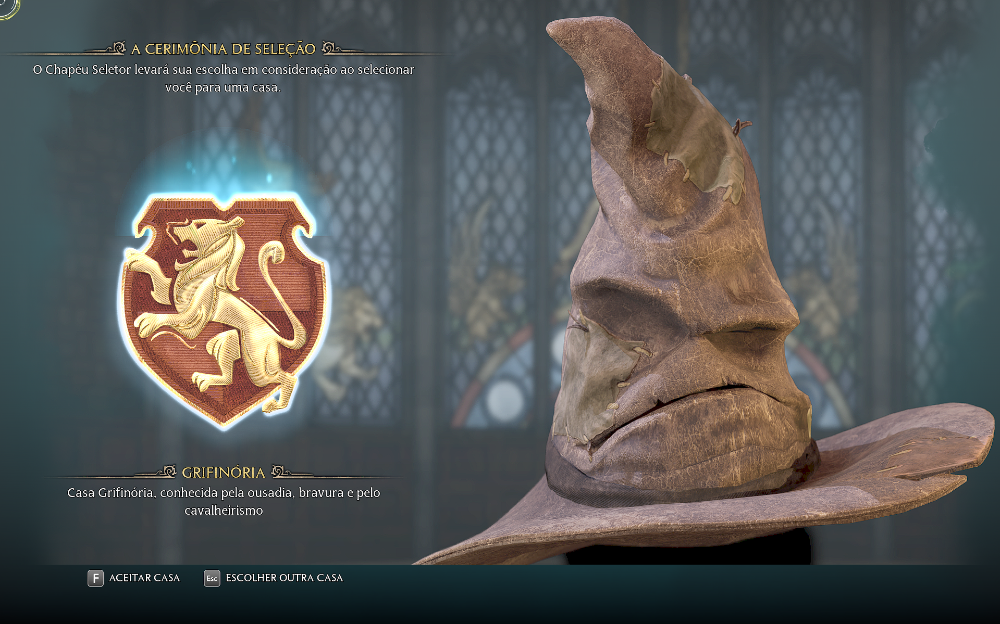

As casas

- Lufa-Lufa - lealdade
- Grifinória - coragem
- Corvinal - inteligência
- Sonserina - ambição
Como funciona a escolha
- O aluno coloca o Chapéu Seletor
- O chapéu analisa a personalidade
- A casa é escolhida
Minha casa de Hogwarts (Grifinória rsrs)


No Hogwarts Legacy você também pode escolher a casa que quiser, o que muda algumas partes da experiência do jogo.